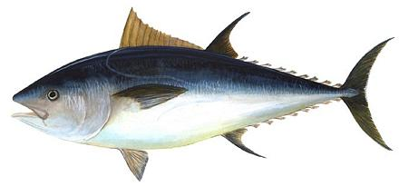

Bluefin Tuna

[Kuromaguro, Hon Maguro, Toro (Japan); Thunnus thynnus (Northern /
Atlantic) | Thunnus maccoyii (Southern) | Thunnus orientalis
(Pacific)]
Bluefin Tuna is the most prestigious sushi / sashimi fish in Japan, and the Japanese are eating them to extinction. Bluefins are listed as Critically Endangered in all conservation lists, but the Japanese simply don't care - the scarcer they are the more they'll pay, because the higher the cost of a fish the better it tastes to the Japanese. It has been reported that A single large Atlantic Bluefin can now fetch as much as US $100,000 in the Japanese fish markets. Do not eat this fish, and strongly discourage others from eating it.
Note that "farmed" is not an acceptable alternative, in fact for Atlantic Bluefin (the most threatened) farming, which depends on wild fish captured before reproductive maturity, is a major cause of depletion. For Pacific and Southern Bluefin, there has recently been some success in captive breeding, but this is still in early experimental stages and is in no way able to impact the market at this time. Drawing from U.S. National Oceanic and Atmospheric Administration = public domain.
More on Varieties of Fish (very
large page).
|
Buying: Don't. In sushi bars avoid Hon Maguro (True Maguro), Minami Maguro (Southern Bluefin), and Kuromaguro. Discourage others from buying these items. Acceptable: Any called simply Maguro or Toro and reasonably priced are probably Ahi / Bigeye Tuna, but it doesn't hurt to ask what kind. Acceptable are Shiro Maguro (Albacore), Mebachi Maguro (Albacore). Binnaga Maguro (Albacore), Ahi (Big Eye), Kihada Maguro (Yellowfin). |
sf_ponyz 060704 - www.clovegarden.com
© Andrew Grygus 2011 - info@clovegarden.com -
Photos on this page not otherwise credited are ©
cg1.
Linking to and non-commercial use of this page permitted.